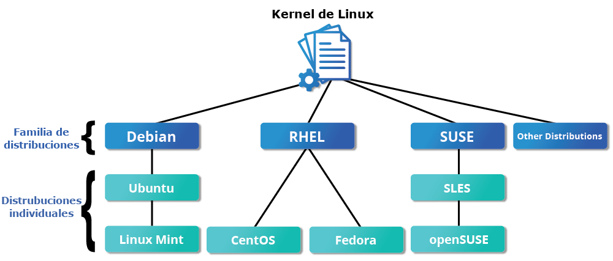
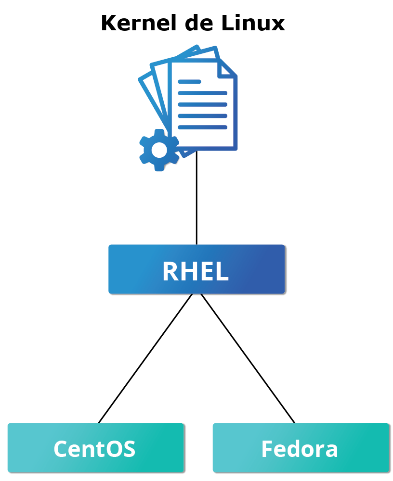
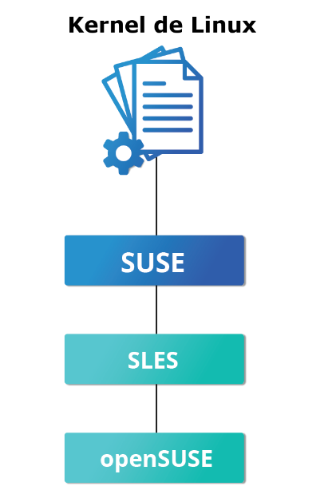
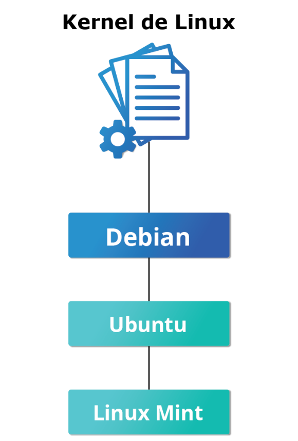

1 Fundación Linux
1.1 Objetivos de aprendizaje
Al final de este capítulo, deberías poder:
- Discutir el papel de la Fundación Linux.
- Apreciar las oportunidades de aprendizaje que ofrece el programa de formación de la Fundación Linux.
- Describir el entorno de software necesario para este curso.
- Describir las tres principales familias de distribución de Linux.
1.2 Acerca de la Fundación Linux
Fundación Linux proporciona un centro neutral y fiable para que los desarrolladores codifiquen, gestionen y escalen proyectos de tecnología abierta. Fundada en el año 2000, la Fundación Linux cuenta con el apoyo de más de 1.000 miembros y es el hogar principal a nivel mundial para colaborar en software de código abierto, estándares abiertos, datos abiertos y hardware abierto. La metodología de la Fundación Linux se centra en aprovechar las mejores prácticas y abordar las necesidades de los colaboradores, usuarios y proveedores de soluciones para crear modelos sostenibles de colaboración abierta.
La Fundación Linux alberga Linux, el proyecto de software de código abierto más grande y generalizado del mundo en toda la historia. También es la casa del creador de Linux, Linus Torvalds, y el mantenedor principal, Greg Kroah-Hartman. El éxito de Linux ha catalizado el crecimiento en la comunidad de código abierto, demostrando la eficacia comercial del código abierto e inspirando innumerables proyectos nuevos en todos los sectores y niveles del ecosistema tecnológico.
Como resultado, la Fundación Linux alberga hoy en día mucho más que Linux; es el paraguas de muchos proyectos de código abierto críticos que dan soporte a muchas corporaciones actuales que abarcan prácticamente todos los sectores industriales. Algunas de las tecnologías en las que nos centramos incluyen big data y análisis, redes, sistemas integrados e IoT, herramientas web, cloud computing, edge computing, automoción, seguridad, blockchain y muchas más.
Vídeo: Formación y certificación de la Fundación Linux
El Grupo de Formación y Certificación de la Fundación Linux trabaja con instructores expertos y desarrolladores de código abierto experimentados para crear cursos de formación para todos los niveles de experiencia, desde principiantes hasta desarrolladores veteranos, así como exámenes de certificación que demuestran tus habilidades a los posibles empleadores de una manera verificable y fiable. Para obtener más información sobre los cursos específicos y los exámenes de certificación ofrecidos por la Fundación Linux, incluidos los requisitos técnicos y otros aspectos logísticos, visita el sitio web de Formación y Certificación de la Fundación Linux.
Vídeo: Eventos de la Fundación Linux
Más de 85.000 tecnólogos y líderes de código abierto de todo el mundo se reúnen anualmente en los eventos de la Fundación Linux para compartir ideas, aprender y colaborar. Los eventos de la Fundación Linux son el lugar de encuentro preferido para los encargados de mantener el código abierto, desarrolladores, arquitectos, administradores de infraestructura, administradores de sistemas y tecnólogos líderes en las oficinas de programas de código abierto y otras funciones críticas de liderazgo. Estos eventos son el mejor lugar para obtener visibilidad dentro de la comunidad de código abierto y avanzar en el trabajo de desarrollo de código abierto mediante la creación de conexiones con las personas que evalúan y crean la próxima generación de tecnología. Proporcionan un foro para compartir y adquirir conocimientos, ayudar a las organizaciones a identificar las tendencias de software desde el principio para informar a las futuras inversiones tecnológicas, conectar a los empleadores con el talento y mostrar tecnologías y servicios a profesionales influyentes de código abierto, medios y analistas de todo el mundo.
la Fundación Linux organiza cada año un número cada vez mayor de eventos, entre los que se incluyen:
- Open Source Summit América del Norte, Europa y Japón
- Conferencia Linux integrada América del Norte y Europa
- Cumbre de redes abiertas y perimetrales
- KubeCon + CloudNativeCon Norteamérica, Europa y China
- Cumbre Linux automotriz
- Foro de KVM
- Cumbre de administración de memoria y sistema de archivos de almacenamiento Linux
- Cumbre de seguridad de Linux Norteamérica y Europa
- Cumbre del mantenedor del kernel de Linux
- Cumbre de miembros de la Fundación Linux
- Cumbre de conformidad abierta
- Y muchos más Para obtener más información sobre los eventos de la Fundación Linux y para registrarte, haz click aquí.
1.3 Requisitos de Software
Para beneficiarte plenamente de este curso, necesitarás tener al menos una distribución Linux instalada (si aún no estás familiarizado con el término distribución, ya que se refiere a Linux, ¡pronto lo estarás!). En la siguiente página, aprenderás más detalles sobre las muchas distribuciones Linux disponibles y las familias a las que se puede considerar que pertenecen. Debido a que hay literalmente cientos de distribuciones, no las hemos cubierto todas en este curso. En cambio, hemos decidido centrarnos en las tres principales familias de distribución, eligiendo distribuciones de cada familia para utilizarlas en ilustraciones, ejemplos y ejercicios. Esto no pretende sugerir que respaldemos estas distribuciones específicas; simplemente fueron elegidas porque se utilizan bastante y cada una es ampliamente representativa de su familia respectiva.
1.4 Las familias y las distribuciones representativas que estamos utilizando son:
- Sistemas de la familia Red Hat (incluidos CentOS y Fedora)
- Sistemas de la familia SUSE (incluido Open SUSE)
- Sistemas de la familia Debian (incluidos Ubuntu y Linux Mint).
Enfoque en las tres principales familias de distribución de Linux En el siguiente capítulo, aprenderás sobre los componentes que forman una distribución Linux. Por ahora, lo que necesitas saber es que este curso se centra en las tres principales familias de distribución de Linux que existen actualmente. Sin embargo, mientras haya contribuyentes talentosos, las familias de distribuciones y las distribuciones dentro de estas familias seguirán cambiando y creciendo. Las personas ven una necesidad y desarrollan configuraciones y utilidades especiales para responder a esa necesidad. A veces ese esfuerzo crea una nueva distribución de Linux. A veces, ese esfuerzo aprovechará una distribución existente para ampliar los miembros de una familia existente. Para obtener una lista bastante larga de distribuciones disponibles, consulta Lista de distribución de LWN.Net Linux.

Familias de Distribución del Kernel Linux y Distribuciones Individuales1.4.1 La familia Red Hat
Red Hat Enterprise Linux (RHEL) dirige la familia que incluye CentOS, CentOS Stream, Fedora y Oracle Linux. Fedora mantiene una estrecha relación con RHEL y contiene mucho más software que la versión empresarial de Red Hat. Una razón para ello es que una comunidad diversa participa en la construcción de Fedora, con muchos colaboradores que no trabajan para Red Hat. Además, se utiliza como plataforma de pruebas para futuras versiones de RHEL.

La familia Red Hat
Utilizaremos CentOS Stream y CentOS con más frecuencia para actividades, demostraciones y laboratorios porque no tiene costo para el usuario final y hay un ciclo de lanzamiento más largo que el de Fedora (el cual publica una nueva versión cada seis meses aproximadamente). La versión básica de CentOS también es prácticamente idéntica a RHEL, la distribución Linux más popular en entornos empresariales. Sin embargo, CentOS 8 no tiene actualizaciones programadas después de 2021. El reemplazo es CentOS 8 Stream. La diferencia entre las dos versiones es que CentOS Stream recibe actualizaciones antes que RHEL, mientras que CentOS las consigue después. Para la mayoría de los fines, esto importa muy poco y nada para este curso. Si bien hay alternativas a CentOS Stream que se parecen más al CentOS anterior, para este curso encontramos que CentOS 8 Stream funciona bien. De vez en cuando verás ejemplos y capturas de pantalla de CentOS 7 que no se han modificado, ya que serían invariantes en las versiones de distribución más recientes. Datos clave sobre la familia Red Hat
Algunos de los datos clave sobre la familia de distribución Red Hat son:
- Fedora sirve como plataforma de pruebas ascendentes para RHEL.
- CentOS es un clon cercano de RHEL, mientras que Oracle Linux es principalmente una copia con algunos cambios (de hecho, CentOS forma parte de Red Hat desde 2014).
- En RHEL/CentOS 7 se utiliza un núcleo de la versión 3.10 muy parcheado, mientras que la versión 4.18 se utiliza en RHEL/CentOS 8.
- Es compatible con plataformas de hardware como Intel x86, Arm, Itanium, PowerPC e IBM System z.
- Utiliza los gestores de paquetes yum basados en yum y dnf RPM (que se tratan en detalle más adelante) para instalar, actualizar y eliminar paquetes del sistema.
- RHEL es ampliamente utilizado por las empresas que albergan sus propios sistemas.
1.4.2 La familia SUSE
La relación entre SUSE (SUSE Linux Enterprise Server o SLES) y openSUSE es similar a la descrita entre RHEL, CentOS y Fedora.

La familia SUSE
Utilizamos openSUSE como distribución de referencia para la familia SUSE, ya que está disponible para los usuarios finales sin costo alguno. Debido a que los dos productos son extremadamente similares, el material que cubre openSUSE suele aplicar al SLES con pocos problemas. Datos clave sobre la familia SUSE
A continuación se enumeran algunos de los datos clave sobre la familia SUSE:
- SUSE Linux Enterprise Server (SLES) está en sentido ascendente para openSUSE.
- La versión 4.12 del kernel se utiliza en openSUSE Leap 15.
- Utiliza el gestor de paquetes zypper basado en RPM (lo cubrimos en detalle más adelante) para instalar, actualizar y eliminar paquetes del sistema.
- Incluye la aplicación YaST (Yet Another Setup Tool) para fines de administración del sistema.
- El SLES se utiliza ampliamente en el comercio minorista y en muchos otros sectores.
1.4.3 La familia Debian
La distribución Debian está en sentido ascendente para varias otras distribuciones, incluida Ubuntu. A su vez, Ubuntu está en sentido ascendente para Linux Mint y varias otras distribuciones. Se usa comúnmente en servidores y computadoras de escritorio. Debian es un proyecto comunitario de código abierto puro (no es propiedad de ninguna corporación) y se centra fuertemente en la estabilidad. Debian proporciona, el repositorio de software más grande y completo a sus usuarios de cualquier distribución Linux.

La familia Debian
Ubuntu tiene como objetivo proporcionar un buen compromiso entre la estabilidad a largo plazo y la facilidad de uso. Dado que Ubuntu obtiene la mayoría de sus paquetes de la sucursal estable de Debian, también tiene acceso a un repositorio de software muy grande. Por estos motivos, utilizaremos Ubuntu LTS (Soporte a largo plazo) como referencia a las distribuciones de la familia Debian para este curso. Datos clave sobre la familia Debian
A continuación, se enumeran algunos datos clave sobre la familia Debian:
- La familia Debian está en sentido ascendente para Ubuntu y Ubuntu es upstream para Linux Mint y otros.
- La versión 5.8 del núcleo se utiliza en Ubuntu 20.04 LTS.
- Utiliza el gestor de paquetes APT basado en DPKG (utilizando apt, apt-get, apt-cache, etc., que tratamos en detalle más adelante) para instalar, actualizar y eliminar paquetes del sistema.
- Ubuntu se ha utilizado ampliamente para implementaciones en la nube.
- Si bien Ubuntu está construido sobre Debian y está basado en Gnome bajo el capó, difiere visualmente de la interfaz de Debian estándar, así como de otras distribuciones.
Más información sobre el entorno de software El material producido por la Fundación Linux es distribu-flexible. Esto significa que las explicaciones técnicas, los laboratorios y los procedimientos deberían funcionar en casi todas las distribuciones más modernas. Al elegir entre los sistemas Linux disponibles, notará que las diferencias técnicas se refieren principalmente a los sistemas de administración de paquetes, las versiones de software y la ubicación de los archivos. Una vez que comprendas esas diferencias, es relativamente sencillo cambiar de una distribución Linux a otra. El entorno de escritorio utilizado para este curso es GNOME. Como señalaremos en Capítulo 4: Interfaz gráfica, hay diferentes entornos, pero hemos seleccionado GNOME porque es el más utilizado.
1.5 Resumen del capítulo
Has completado el capítulo 1. Vamos a resumir los conceptos clave cubiertos:
- La Fundación Linux es la organización que abarca muchos proyectos críticos de código abierto que impulsan a empresas de todos los sectores industriales. Su trabajo actual se extiende mucho más allá de Linux, fomentando la innovación en todas las capas de la pila de software.
- La formación de la Fundación Linux es para la comunidad y hecha por la comunidad. La formación de Linux es flexible en la distribución, está técnicamente avanzada y se crea con los líderes de la comunidad de desarrollo de Linux.
- Existen tres familias de distribución principales dentro de Linux: Red Hat, SUSE y Debian. En este curso trabajaremos con miembros representativos de todas estas familias en todo momento.